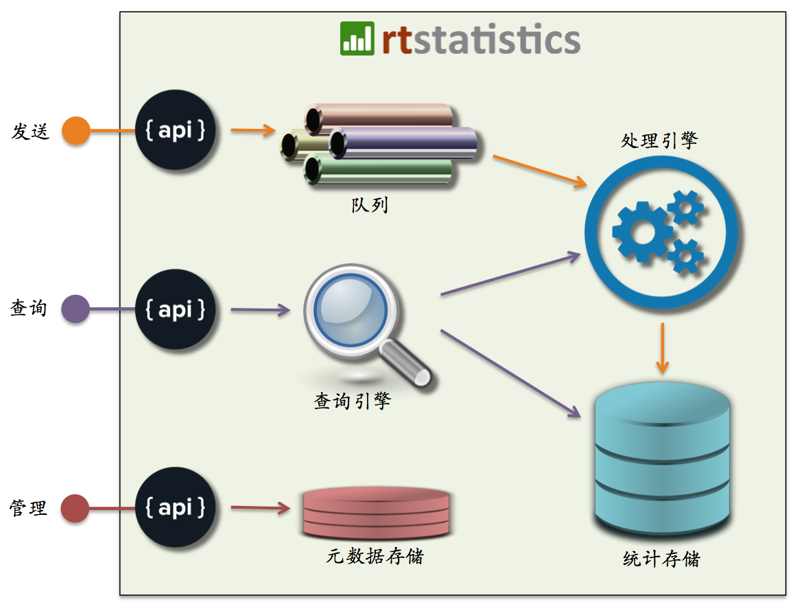

真正实时的海量数据统计平台

当今，各种数据正在以前所未有的速度不断地被产生和收集。然而人们的大脑仍旧只能接受少量而慢速的信息。这是为什么在绝大多数时候我们都需要将大量的原始数据进行汇总和图表化。
在过去的几十年里，传统的数据库和数据仓库技术已经被用来对数据进行查询和汇总，但是当数据量增加的时候，端到端的数据延时与查询响应时间也随之增加。毕竟传统技术原本就不是为大数据而设计的。即便利用市面上流行的一些大数据处理平台，也仍旧难以克服“大量”与“迅速”之间的矛盾。
我们提供一项全新的产品／服务。它可以对海量的数据进行实时收集并汇总，而且不论数据量多大一般都可以在1秒钟之内返回所需的统计结果。至于数据的及时性，我们可以保证接收到的数据在1秒钟之内就能够在统计结果中体现。
产品形态
rtstatistics.com的实时统计平台基于云技术，向用户开放管理控制台（https://manage.rtstatistics.com）和REST API（https://api.rtstatistics.com）。任何人都可以直接登录并使用这个平台，并且只有当数据量超过每月10万条的时候才需要付费。
对于有特殊需要的客户，我们的软件也可以安装到客户指定的服务器上，详细情况请同我们联系。
技术架构
以下是rtstatistics.com的技术架构：

- API层对外提供所有功能接口
- 待处理数据队列对数据进行暂存并支持故障恢复后的重处理
- 处理引擎进行实时统计汇总
- 统计存储保存统计结果
- 查询引擎对实时和历史统计结果提供查询服务
- 元数据存储保管所有用户自定义的元数据
产品特点
统计结果实时汇总
与其它系统不同，rtstatistics.com的实时统计平台对于数据的统计和汇总是真正实时的。举个例子，如果在早上8点45分21秒的时候有一条涉及100元金额的订单数据被送到平台中来，而管理人员在8点45分22秒的时候刷新了统计图表，那么他会看到这新增的100元体现在汇总的订单金额中。这样的真正实时汇总能力，不但可以带来竞争优势，而且可以使得一些以前不敢想象的应用场景成为现实。
查询结果瞬间返回
在统计结果查询方面，rtstatistics.com的实时统计平台拥有卓越的性能与可扩展性。即便不使用缓存，查询也一般可以在1秒钟之内完成，而且每项统计可以支持上千个并发查询。这不但意味着最终用户能够获得良好的体验，同时也意味着在大部分情况下，在客户的系统里并不需要额外对查询结果进行缓存。
海量数据实时接收
rtstatistics.com的实时统计平台的REST API被用于对实时数据进行接收，它基于HTTPS协议，不但适合穿越防火墙，而且可以保障数据安全。不论数据源位于何处，也不论数据源的数量以及产生数据的频度，实时统计平台总可以实时地接收到数据并开始处理。
可定制、易集成
rtstatistics.com的实时统计平台提供的是实时统计能力，至于统计方法和涉及的数据字段，可以由客户自行定义。这使得客户能够很容易地将自己的业务逻辑与实时统计能力揉合在一起，而无需额外的数据转换、ETL之类的环节。
对于数据的发送、统计及相关规则的定义、统计结果的查询，rtstatistics.com均提供基于HTTPS的REST API，非常方便与各种系统进行集成。而且，还有开源软件能够对查询结果进行格式转换，使得他们可以直接应用于d3.js/c3.js、Google Charts等图表工具库。
一些典型应用场景可以在这里找到：《解决方案》。
原生的多时区支持
中国是单一时区制国家，而且已经废弃了夏令时，时区问题相对简单。而如果您有或者打算开展海外业务，就难免会遇到时区相关的问题，比如在有的国家，与UTC/GMT时间之间的时差可能包含半个小时甚至15分钟；有的国家本身就有多个时区并存，而且还有各不相同的夏令时。这些问题不是靠往UTC/GMT时间上简单地加或减掉几个小时就能够真正解决的。rtstatistics.com的实时统计平台原生支持各种时区，可以为您在全球范围内开展业务提供完美支持。目前支持的时区列表在这里：《支持的时区》。
可自定义时间戳
在进行按时间汇总的时候，“时间”究竟是什么极为重要。rtstatistics.com的实时统计平台不但可以将数据被送达平台的时间作为统计用的时间戳，而且支持用户自定义的时间戳。比如说，可以把发送给平台的订单数据中的“交易时间”作为时间戳，从而不论订单数据送达时间如何，对订单的统计总是以交易时间为准的。
开始使用
如果您想感受一下应用效果，可以访问以下演示页面，其中展现的均为真实的实时数据：
如果您想用用看的话，可以试试参考以下教程：
如有任何的意见或者问题，欢迎发送邮件至：info@rtstatistics.com.